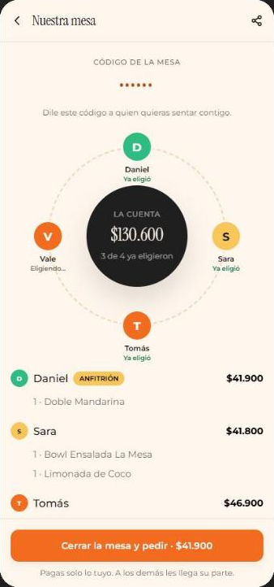

App · panel de cocina · backend
Un restaurante que vende por su cuenta
El sistema completo que necesitaría un restaurante para no ceder el 30 % de comisión a una plataforma de delivery: la app del cliente, el tablero que usa la cocina y la base de datos que los conecta.
La app y el panel corren contra el backend real, con datos de demostración; el panel entra solo con una cuenta de cocina de solo lectura. El pago es simulado.
Tres piezas, un sistema
El cliente pide, la cocina lo ve al instante y el total lo calcula el servidor. Cada pieza resuelve una parte y las tres hablan con la misma base de datos.
La app
Carta editorial, personalización de platos, carrito con cupones, pago y seguimiento en vivo. En el portátil se abre dentro de un marco de teléfono.
Expo · React Native · TypeScript Abrir la app 02El panel
Tablero de cuatro columnas con un reloj por pedido, aviso sonoro al entrar uno nuevo y gestión de la carta. Un solo archivo, sin dependencias.
HTML · CSS · JavaScript Abrir el panel 03El backend
Seguridad por fila y por columna, tiempo real, límite de pedidos por cuenta y funciones de servidor que firman el cobro y validan la respuesta de la pasarela.
PostgreSQL · Supabase · Deno Ver el SQLLa mesa que gira
La navegación y la marca son el mismo gesto
La carta no arranca como una lista sino como una mesa vista desde arriba, con las categorías servidas alrededor. Se gira con el dedo y encaja sola en el plato más cercano al soltar, o se toca un plato y la mesa lo trae al frente.
El anillo abierto del isotipo se repite en toda la app: rodea a quienes comparten mesa y se va llenando a medida que avanza el pedido.
El tablero de cocina
Que se vea de lejos qué se está atrasando
Cada pedido lleva un reloj que pasa de gris a ámbar y a rojo según se demora. Cambiar de estado es un toque, y el cambio llega al teléfono del cliente en segundos.
El aviso sonoro se genera en el navegador, sin archivos externos. La cuenta de demostración ve lo mismo que el equipo, pero la base no le deja cambiar nada.

El precio lo pone la carta
La base no se cree lo que manda el teléfono
Quien tenga la app puede llamar a la API sin pasar por ella. Por eso el nombre y el precio de cada plato salen de la carta al guardar el pedido, el cupón se comprueba en el servidor y el total se suma en la base. Una hamburguesa a un peso se guarda por lo que vale.
No es una promesa: son 57 pruebas que entran con el rol de un cliente, de la cuenta demo y de cocina, e intentan cada trampa contra un PostgreSQL de verdad.
- un pedido recién creado no guarda el total que mandó la app
- el precio es el de la carta más la tocineta, una sola vez
- la opción inventada y la repetida no llegan a cocina
- el 2x1 regala la hamburguesa más barata del par
- la clienta no se puede hacer administradora
- la cuenta demo no puede quitarse la marca de demo
- no se añaden platos a un pedido que ya no es reciente
- un segundo pedido en el mismo minuto se rechaza
- 57 pasan · 0 fallan
Mesa compartida
El lema de la marca, convertido en pantalla
«Donde todo se comparte»: abres una mesa, compartes un código y quienes se sientan contigo aparecen alrededor del anillo, cada uno con lo suyo. Al cerrar, cada quien paga su parte o alguien invita.
Lo que hay hoy: el diseño, la pantalla y las tablas. En la demo corre con comensales de ejemplo; unir en vivo los carritos de varios teléfonos es el siguiente paso.

En un minuto
Un pedido de principio a fin: de la carta al tablero de cocina, y lo que la base comprueba por el camino.
Verificado, no prometido
Todo esto corre solo en cada push, antes de que nada llegue a esta página.